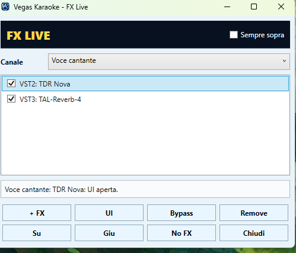
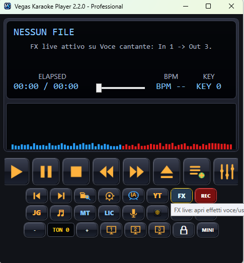

Novità 2.3.1
FX Live VST2/VST3 per voce e uscite
Vegas Karaoke Player 2.3.1 migliora la gestione degli effetti live: plugin VST2 e VST3, interfaccia originale del plugin, catene per microfono cantante, multitraccia e uscite ASIO.

Effetti voce in tempo reale
VST2 e VST3
Carica plugin compatibili per riverbero, equalizzazione, compressione e trattamento voce.
UI del plugin
Apri l'interfaccia originale del plugin e regola direttamente i parametri dell'effetto.
Bypass e No FX
Disattiva rapidamente una catena effetti durante la serata senza cambiare configurazione.
Sempre sopra
Mantieni la finestra FX in primo piano mentre lavori con player, database o playlist.
Pulsante FX direttamente nel player
Nella versione 2.3.1 il player mostra il comando FX Live: puoi aprire gli effetti voce/uscite in modo rapido durante il live.
